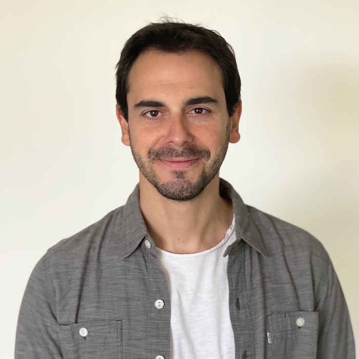

Research Fellow

About
I am a Research Fellow at Harvard Medical School and Boston Children's Hospital, and a member of MIT's Center for Brains, Minds and Machines. I study the neural mechanisms and computational principles underlying human cognition, with a particular focus on perception, memory, and learning. My research combines intracranial neurophysiological recordings in the human brain, behavioral experiments, machine learning and AI methods.
I also work on advancing neurotechnology for use in patients. Together with Dr. Scellig Stone, we established a novel technique to record single-neuron activity in pediatric epilepsy patients, launching the human single-neuron research program at Boston Children's Hospital. These recordings offer exceptional resolution for studying epileptic activity and open new avenues to investigate the neural basis of human cognition and neurological disorders.
Publications
Selected publications. Full list on Google Scholar.
Single-neuron encoding of rapidly learned visual information reshapes human perception
Interaction between depth cues binocular disparity and motion at the single-cell level in macaque area MT/V5
Can machines imitate humans? Integrative Turing tests for vision and language demonstrate a narrowing gap
An adversarial collaboration to critically evaluate theories of consciousness
Open multi-center intracranial electroencephalography dataset with task probing conscious visual perception
Interdisciplinary and collaborative training in neuroscience: Insights from the Human Brain Project education programme
Look twice: A generalist computational model predicts return fixations across tasks and species
Do computational models of vision need shape-based representations? Evidence from an individual with intriguing visual perceptions
Areal differences in depth cue integration between monkey and human
Neural effects of transcranial magnetic stimulation at the single-cell level
The autism- and schizophrenia-associated protein CYFIP1 regulates bilateral brain connectivity and behaviour
Homology and specificity of natural sound-encoding in human and monkey auditory cortex